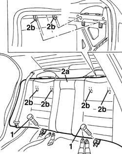

7050A19 rear seat squab - r r
- Path
- Procedures > 70 FITTINGS > 7050 REAR SEATS > 7050A rear seat assembly > 7050A19 rear seat squab - r r
- Kind
- repair procedure (removal / refitting; the operation number is the code)
- Applies to
- all engines; all production periods
- Interactive page
- https://sloeber94.github.io/elrnDB-a156/en/#/3238914
Applies to: all engines; all production periods
 Removing
Removing
 Refitting
Refitting7050A20 one-piece rear seat cushion - r r
7050B10 l/h or r/h head restraint (one) of rear seat - r+r
1. Unscrew the screws.
2. Lift the back (2a) in order to disconnect it from the rear check rods (2b), then remove it.

Applies to: all engines; all production periods
Refitting
RemovingMake sure that the back is not damaged.
Place the back and connect it to the rear check rods.
Screw the screws and tighten them to the given torque.
 | Fastening | Component | Ø | Value (daNm) |
|---|---|---|---|---|
- | Bolt | REAR SEAT BACKREST. | - | 2.2 - 2.6 |
Topics linked from this page (2)
- 7050A20 one-piece rear seat cushion - r r
- 7050B10 l/h or r/h head restraint (one) of rear seat - r+r
Topics that link to this page (22)
- 1040A10 fuel tank - r + r and decant fuel
- 1040A14 fuel tank - r + r for replacement
- 1040A30 fuel filler pipe - r + r
- 1040A66 Fuel LEVEL GAUGE for submerged pump assembly - Replace.
- 1040A70 submerged pump assembly complete with level guage control - r + r
- 1040B36 rear fuel delivery line - r r
- 1040B56 fuel return line - r r
- 5505C41 cabin wiring - r r
- 5570T28 ecu for car radio aerial in rear window heater element - r+r
- 5570T31 aerial coaxial lead - r r
- 5580T08 AMPLIFIER for Bose sound diffusion system' - R.R.
- 5580T30 Bose sound system' SUBWOOFER - R.R.
- 7030B12 sliding roof (assembly) - r+r
- 7030B46 sun roof cables , one , lh or rh - r r
- 7030B50 sun roof guide , one , lh or rh - r r
- 7040H10 roof panel lining - r r
- 7040H16 roof panel lining - r r
- 7040H42 rear pillar trim - r r
- 7040H80 parcel rack
- 7050A10 rear seat - r+r
- 7050A27 Rear seat BACKREST COVER - R.R.
- 7065B10 l/h or r/h rear safety belt (one) - r+r